Now that we have the general story from C.E. Burr, it's time to get specific. HOW do we - on a very personal individual, family, tribal or community level - recycle garbage into fertilizer and useable power? CAN we do it? Kieth D. Gilbert says, "YES!"
Drawing on personal experience and-we believe - the World Health Organization's book, COMPOSTING, Kieth here presents a blueprint.
Please note that this system requires users to somehow physically move wastes into and out of the plant whereas C.E. Burr's design automatically transfers such wastes. Burr's ideas, then, seem - by far - the more practical, trouble-free and desirable . . . even if details - at this point - are a little sketchy. Perhaps we can build an ideal recycling unit by grafting onto Burr's design the following details on how to generate power from garbage.
This article is presented as an alternative to the usual wasteful disposal of manure, feces, and various other organic materials. By using the principles presented here for converting organic waste into methane gas, even the most remote wilderness cabin can have gas heating, refrigeration and electricity. All the home appliances and machines which run on butane gas can be made to operate on methane and by using a compressor you can probably convert your car or truck to operate on methane also. There is another point of view which you may also feel is worth considering: The gases which we harness and use in this fashion would have been released into the atmosphere anyway so we will be adding nothing to the pollution of our environment.
In fact, we will be doing considerable good if we harness and use these ordinarily wasted gases as a partial substitute for other power sources. We'll do even more good if we also use the residue from our composters as fertilizer for the land.
There are several basic factors which must be considered in constructing or purchasing a digester installation. These are: (1) Climate; (2) Single or multiple family installations; (3) Amount of wastes available; (4) Gas production; (5) Number and size of digesters; (6) Location of digesters; (7) Gas requirements and storage; (8) Materials and costs.
Small digester plants can be used most effectively in temperature climates, where freezing temperatures are infrequent and of short duration. Decomposition and gas production are most rapid at about 35°C. (95°F.) but are satisfactory at temperatures above 15°-20°C. (59°-68°F.). Gas production practically ceases at temperatures below 10°C. (50°F.). The digester can be used satisfactorily in cold climates, provided the tank is properly insulated and/or heated. The additional heat required can be provided by burning some of the gas produced, by stacking manure and straw around the tank or by placing the tank above the ground so that it is exposed to the sun. When digester gas or an aerobic compost stack is used for heating the tanks, sufficient quantities of organic materials must be available to provide the additional heat as well as enough gas for other purposes.
Either single or multiple family installations can be built, the choice depending on whether the single family has sufficient manure and other wastes to operate a unit. A minimum single family installation should normally include a digester tank of about 4-5 m3 capacity and a gasholder of at least 2 m3 capacity. Two or more digesters are desirable so that there will not be an interruption of gas production and so that one tank may be loaded while the other is digesting. A single gas-holder can serve more than one digester unit.
If two or more neighboring families have only one farm animal each, it may be advantageous to combine their wastes in one digester installation from which the gas can be distributed to each dwelling. The plant can be located to minimize transportation of wastes and to provide latrine facilities for the co-operating families. This arrangement would permit the use of more than one digestion compartment with a resulting, more uniform gas production.
The cost of the mutual installation, per ton of manure decomposed, will be less for multiple family plants than for single plants. However, a multiple family plant serving more than two families may require such excessive piping of gas and transportation of organic matter as to make individual plants generally more economical.
Horses and cows each produce from 10 to 16 metric tons of manure per year, depending upon stabling conditions and the amounts of organic litter used for bedding. To this may be added garbage, waste straw, cane stalks, or any other organic material. Where night-soil is used as a fertilizer, it should be digested with other organic wastes before application to the land, in order to prevent the spread of faecal-borne diseases.
While human excretement does not add much weight to the digester (30-60 pounds per person per year), it does provide appreciable quantities of nitrogen and phosphorus. These elements are necessary for biological digestion and methane production from cellulose and other materials with a high carbon content. The sanitary treatment of night-soil for the reclamation of nutrients is most important. It should be further mentioned that when night-soil and animal manure containing large quantities of nitrogen and phosphorus are digested, large amounts of waste materials such as straw, cane stalks, and sawdust, can be added to increase gas production. When night-soil is digested with other wastes, a digestion period of three months or more is desirable in order to ensure adequate destruction of pathogenic organisms and parasites.
Stable manure and mixed organic refuse weighs from less than one-half to as much as one metric ton per cubic meter, depending upon the amount of moisture and the degree of compaction.
In practice, about 50% of the carbon theoretically available for gas production is converted into gas. A metric ton of waste will normally yield about 50-70 m 3 of gas per digestion cycle, depending upon the proportion of organic matter and the carbon content of the waste.
The digestion cycle will be shorter at high temperatures than at low temperatures, and the daily yield per ton of material will be greater. Considerably greater digester capacity is required to produce a fixed amount of gas at a temperature of about 20°C. than at a temperature of 30° 35°C. The following estimates are for gas production per ton of manure for different digestion periods at different temperatures:
Similar data on gas production and digestion time for sewage sludge at different temperatures may be found in books on sewage treatment. The amount of gas produced and the rate of digestion at different temperatures are the important factors in determining the size of digestion tanks to be used.
The number and size of the individual digestion tanks of a plant will vary with the amount of decomposable material available and the amount of gas desired. A minimum of two, and preferably three, tanks is recommended to maintain more uniform gas production. A digestion compartment of 8 m3 capacity (2m x 2m x 2m) has been found to be an efficient size.
In small installations, where sufficient materials are not available to supply two digesters of this size, smaller digesters could be used, but the saving in cost of construction would be small. For larger installations, up to six compartments of about 8-12 m 3 each may be used. It is doubtful whether more than six or, possibly, eight compartments would be economical, and for very large plants the size - rather than number - of individual compartments should be increased.
The digesters should be located near the source of manure and waste material to avoid excessive handling and transportation. Also, it is desirable to place them so as to minimize the amount of gas piping required. In Europe I have seen composters built into homes and barns. Usually this was done when livestock was housed beneath the living quarters of the farm family.
It is important to orient a digester so that it will receive the maximum amount of sunlight to help maintain higher digestion temperatures. Greater heating from the sun can be obtained when the tank is placed on top of the ground, but this involved lifting the materials higher when loading.
If tanks are used only for manure and litter, it is common practice to place them partly below and partly above the ground. This arrangement also permits the placement of compost around the tank for heating. If a latrine is incorporated in the digester, the top might be as much as 0.7 m above the ground without necessitating too many steps.
The methane gas generated by a digester may be used for domestic purposes, such as cooking, food refrigeration, and lighting. The following are some approximate quantities of gas for these different uses: Domestic cooking, 2 m 3 per day for a family of five or six people; water heating, 3m 3 per day for a 100 litre tank or 0.6 m 3 for a tub bath and 0.35 m 3 for a shower bath; domestic food refrigeration, 2.5-3 m 3 per day for a family of five or six; lighting, 0.10-0.15 m 3 per hour per light.
The gas may also be used to provide power for engines, milk cooling and electricity. A two-horsepower stationary engine requires about 0.9 m 3 per hour. For milk cooling on a dairy farm, the following approximate quantities of gas are required to operate a butane cooler unit: 0.8 m 3 for 55 litres; 1.0 m 3 for 90 litres; and 1.25 m 3 for 150 litres.
Since the gas is produced continuously, day and night - but is used largely during the daytime - it is necessary to provide storage facilities so that the methane will not be wasted and will be available when needed. The storage capacity should be estimated to meet peak demands.
For small installations, storage capacity for about one day's requirement of gas should be provided. This will usually be about half, or less, of the total volume of manure actively undergoing digestion. In warm areas the storage capacity might be reduced to half the amount required per day, but it is probable that there will be times when gas will be wasted from the digester because the gas-holder is full. At other times, when a considerable amount of gas is being used, the gas-holder might become empty. The volume of the gas-holder should not be less than about 2 m3 , even for small installations.
The gas-holder may be circular or square and should be provided with a water seal to prevent escape of gas or admission of air. The weight of the floating cover of the gas-holder provides the gas pressure. The usual pressure for gas-burning equipment is 5-20 cm (2-8 inches) of water. The bottom and walls of the gas-holder - which must be watertight - can be made of concrete, but the cover should usually be metal in order not to produce excessive gas pressure. Center weights on the gas-holder cover may be used to provide the desired pressure for the burning equipment.
Gas may be stored in the digestion tank by using a floating cover as shown in Fig. 9. An additional gas-holder may be used with floating-cover digesters, in which case one gas-holder would serve several individual digesters.
Copper piping is the most satisfactory for gas distribution because it will minimize corrosion problems, but galvanized iron or black iron pipes and, perhaps, plastic or fiberglass pipes can be used.
Valves should be provided for shutting off the gas for the digesters and from the gas-holder. The piping should be arranged so that the gas from the digester can flow directly to the burning fixtures and the gas-holder merely floats on the line producing the pressure, taking up gas when it is produced faster than it is consumed and supplying it when the rate of consumption is greater than the rate of production.
A trap should be placed at the low point in the gas line to permit the escape of any water caused by moisture condensation. The trap can be placed in a pit next to the tank or at some other place where the low point of the line can be conveniently located.
If the gas is burned in an engine, removal of hydrogen sulfide (which will also be generated) is sometimes desirable to prevent corrosion. This can be accomplished by passing the gas through an absorption tank containing ferric oxide. The oxide will remove very small concentrations of hydrogen sulfide and can be regenerated by exposure to the air.
Complete plants, either prefabricated or built of concrete at the site, may be purchased in several countries. I would suggest Germany, Switzerland and Japan as sources, if for some reason you just can't build one from local materials. The prefabricated plants may use steel or concrete digestion tanks with metal covers and gas-holders.
You can reduce installation costs if you build most of the plant yourself. The digestion tanks and gas-holder base can be constructed of concrete or masonry. If masonry is used, the tanks should be lined with plaster to prevent leakage of gas or liquid.
The gas-holder cover usually has to be purchased since it is most satisfactory when made of metal. It must be gas tight, not easily deformed and built with sufficient accuracy to avoid binding in the guides as it adjusts to varying volumes. The piping valves and burners must also be purchased. Unless you're skilled in pipe fitting, the pipes should be installed by an experienced craftsman.
The initial cost of a methane plant may seem rather high, particularly if you do not do a great deal of the work yourself. When this cost is amortized over a period of several years, however, you'll find that such a plant will provide a cheap source of fuel and a sanitary method of waste treatment.
The operating and maintenance costs are relatively insignificant. Loading and removal of material is a matter of labor, part of which would be expended in the normal handling of manure from the barns to a stack or compost pile. The maintenance of equipment amounts to painting the metal parts with the same paints used in sewage plants, to prevent corrosion. One of these generators, if well built and protected, should last over 25 years.
Most of the materials required for the construction of a manure-gas plant can usually be found locally: Sand and gravel for making concrete, and stones or bricks for masonry. Concrete structures are preferred because they can be made water and gas tight. When built above ground, they can also be reinforced to resist inside water pressure. Concrete does require construction forms, reinforcing steel and more cement than is needed for masonry-built tanks, however. In some areas, this may constitute a serious disadvantage.
Before buying or building forms for a tank, try to locate someone who builds silo foundations and find out if his forms can be adapted to a gas plant. If they can, you will make a considerable saving in time and money.
Tanks may also be built of stones or bricks, using a good cement mortar for the joints. Masonry walls should be designed to sustain water pressure, and inside surfaces should be lined with a thick coat of rich sand-cement-lime plaster in order to make the tanks water and gas tight.
Rectangular tanks are easier to build than circular ones but during operation in cooler climates, they lose more heat because of their greater surface/volume ratio. Circular structures are also more resistant to both inside water pressure and outside earth pressure, if any, and consequently require comparatively thinner walls.
Each tank should be provided with a manhole for loading, unloading and occasional cleaning. Once a tank is ready for operation, the opening should be kept tightly closed to prevent escape of gas. This may be achieved by inserting a rubber gasket, or a rubber caulking compound, between the border of the cover and the tank. A plaster of clay or concrete might also be used in an emergency.
Figures 1 and 2 show an individual circular digester built of masonry and lined with plaster. Field stone, brick or cinder blocks could be used here. In this plant, the gas-holder is a separate unit (see Fig. 8). Several individual digesters may be utilized. The gas from all digesters is fed to the one gas-holder.
Another type of individual digester, which uses a floating cover for gas storage, is shown in Figure 9. The cover is removed for loading. The digester can be circular, square or rectangular-depending on the ease and economy of construction. Circular covers are easier to keep from binding as they raise and lower.
In areas where night-soil is used as fertilizer, it will be found advantageous to combine latrine and digestion tanks in the manner illustrated in Figures 3-7. Figure 3 shows the view of the plant with housing for the latrine. The housing may be of any suitable local materials. The door should be arranged so the latrine cover can be raised easily for adding manure, straw or other wastes to the digestion tank.
It should be noted that these drawings show the Oriental style of opening for the user. This type of opening is far superior to the old-fashioned, Midwest and Southern out-house seating arrangement. Admittedly, it is not immediately as convenient as that to which most of us are presently accustomed, but from a health standpoint it is far superior to even the finest porcelain arrangement.
Figures 4 and 5 show the plan of the plant and details of its cross-section, respectively. Figures 6 and 7 show the gas-holder and gas-piping details.
A suitable baffle should be provided between the digestion tank and the latrine pit to prevent the escape of valuable gas. Care should be taken during the operation of the plant to see that this seal is maintained. It will also be necessary to maintain in the latrine an adequate level of water in order to ensure operation in a clean and sanitary manner.
In the design shown, the digesters are placed partly below ground level so that the floors of the latrines are not too high above ground. Steps could be made, however, if you desire to have more of the tank above ground level.
The digester's gas piping is very simple. The only requirement is that the opening of the pipe collector should be sufficiently high (12-18CM) above water level to prevent it from becoming clogged by floating scum. In some tanks a ball-shaped dome is built as part of the roof for easier collection of gas. Outside the digester, a petcock followed by a shut-off valve should be installed, the petcock for occasional testing of gas-burning quality and the valve for shutting off and isolating the digester compartment when so desired.
The digester should be provided with a short discharge pipe, leading outside to a spigot or valve, through which the tank's liquid can be drained into a lined pit. As this liquid is rich in nutrients and is seeded with micro-organisms which are adapted to the environment, it is essential that it be returned to the land and not wasted. Some of the liquid should be used again with the next batch of manure loaded into the digester, the excess is what is put onto the land as organic fertilizer. The capacity of the pit need only be 1/2-1 m 3 for each 10 m 3 of digester space.
The gas-holder consists essentially of a reinforced-concrete or masonry tank, filled with water and equipped with a floating cover. The cover moves up and down through the water according to the quantity of gas the holder receives from the digester(s) (Figure 8). The water caught in the space between the cover and the tank walls maintains a permanent seal against any escape of gas. The gas-holder may be any shape, but circular is usually the most satisfactory.
Under the pressure of gas arriving from the digester, the cover moves upwards, the water under it is pressed down, and, at the same time, the water level in the space between the cover and the tank's walls moves upward, the difference in water levels corresponding to the actual pressure of gas stored under the cover. In designing floating covers for digesters, allowance should be made in the freeboard on the tank to account for the difference in water elevation inside and outside the cover (Figure 9).
The tank should be sunk in the ground for structural reasons, and to help prevent freezing of the water in cold climates. It is good practice to build the tank walls slightly higher than the bell-shaped cover. The cover is usually made of sheet iron, 2-3 mm thick, and should be strengthened and framed with angle iron or cross-braces. Otherwise the thin iron sheets may warp and bind against the wall surfaces of the tank.
It is also necessary to guide the floating cover in its vertical movements. This is done by the installation of a system of rollers and U-shaped iron guides, fastened to the cover by welding or other means. Cylindrical floating covers require three guides, while rectangular covers need a minimum of four. It is also desirable to provide one or more weep-holes 5-8 cm from the bottom of the bell cover through which excess gas may escape when the gas-holder is full and has reached the top of its run.
It is the weight of the floating cover which imparts pressure to the gas. If the cover is too heavy, it may be necessary to install a counter-weight system to reduce excessive gas pressure at points of use. If, on the contrary, the cover is too light, additional weight is necessary to provide the recommended gas pressure of 10-20 g per cm 2 (4-8 inches of water) at the outlet of the gas-holder, assuming that the latter is situated at a reasonable distance from the house and the apparatus which it serves.
A heavy concrete cover might be used if counter-weights on pulleys were provided to reduce the pressure. The following is an example of determination of gas pressure in the circular gasholder illustrated in Figure 6. It is assumed that the cover is built of sheet iron 2 mm ( 0.079") thick, weighing 16 kg per m 2 ( 0.023 lb. per sq. in.)
Area of top of floating cover = 2.54 m 2 (3945 sq. in.)
Total weight of floating cover= 300 kg (661.5 lb.)
Pressure of gas
= total weight divided by surface area of top of cover
= 300 kg/2.54 m 2
= 118 kg per m 2 or 11.8 g per cm 2
= 661.5 lb./3945 sq. in. = 0.17 lb./sq. in.
The piping of the gas-holder can be conveniently arranged in the manner shown in figures 7 and 8. A single gas pipe enters at the bottom and serves both to bring in the gas from the digester and to convey it to the points of use. The trap mounted at the lowest point on the gas piping in the adjoining pit collects and evacuates water condensation from the gas piping.
Various systems have been designed for insulating or heating digesters and gas-holders in cold climates. For insulation purposes, double walls are sometimes built, the space being filled with straw, sawdust, or fibre-glass. The simplest and most economical method of heating tanks consists in surrounding them with a manure pile of one meter, or more, thickness, as shown in Figure 10. The pile is built in layers leaning against the tank's outside surfaces, but sloping away from them. In this way, the heat generated in the pile is deflected upwards and sideways towards the tank walls. The top of the tank may also be covered with such a manure pile. The latter should be renewed every 2-3 months, in order to make use of its maximum heating potential.
This method may be improved by heating the digester's liquid through the heat generated in an outside manure pile and recirculating it by means of pipes installed as shown in Figure 10. The heated liquid enters the tank at the top, the cold layers at the same time being drawn into the lower branches of the pipes. In this way, constant recirculation is ensured.
In large installations some of the gas can be used to heat water in a boiler; the hot water is then circulated through heat-exchange coils in the digester.
Considerable care should be exercised in putting a plant into operation. Until the conditions have become satisfactory for the growth of large numbers of the organisms necessary for good anaerobic decomposition and methane production, there is a danger of acid formation, which will retard digestion and inhibit gas production. In first starting a digester, material which has been partly decomposed by aerobic fermentation for a period of 1-2 weeks should be introduced. This initial aerobic fermentation will eliminate some of the components which may cause production of acids. After loading, the material should be allowed to ferment aerobically for a further period of about three days to develop a high temperature. If available, it is best to add some digested humus and liquid from another plant which has been in operation and producing gas for some time. The remaining volume of the digester is then filled with water.
After the tank has been sealed to provide anaerobic conditions, the material will undergo a maturing period of several days before gas production starts. If the initial material is not satisfactorily decomposed and seeding from another tank is not possible, acid conditions can develop and it may be a month or more before the conditions become favorable for gas production. The addition of lime or of an alkali or ammonium phosphate will help to correct an acid condition and facilitate earlier gas production. Horse and cow manures are more alkaline, and usually less difficulty will be experienced if the digester is started with these materials after partial aerobic decomposition.
The desirable pH is in the range of 6.8 to 7.5, with an optimum value above 7.0. If by some rare circumstance the initial material is highly alkaline (i.e., pH up to 9.5), the pH will soon be lowered by the CO 2 produced by decomposition. Therefore, the need for correction of the initial pH by the addition of acid is extremely unusual. In no case should sulfuric acid be added since it would contribute to the production of hydrogen sulfide.
The conditions for good decomposition and gas production will be established more rapidly if the temperature can be maintained near 35° (95° F). While it is not necessary to have this high temperature for developing digestion, it is most desirable to maintain a temperature of above 20°C (68° F) during the initial stages.
The valve on the pipe to the gas-holder should be closed while digestion is being established. The petcock which precedes it should be open to permit any air in the tank to escape as decomposition starts. After two or three days, gases of decomposition - mostly carbon dioxide - will begin to escape. An attempt to ignite the gas should then be made. The petcock can then be closed. Further attempts to determine whether methane production has started should be made daily by trying to ignite the gas as it escapes when the petcock is opened.
It will take one or two weeks or often longer to establish the production of a satisfactory gas, the time depends upon the temperature and the success in avoiding development of initial highly acid conditions in the digester. When the escaping gas will provide a continuous flame it is ready for use, and the valve to the gas-holder and distribution lines should be opened, and the petcock closed.
The rate of gas production may be determined when desired by diverting all the gas to the gas-holder for a known time and noting the change of volume, e.g., if one cubic meter of gas were collected in the gas-holder during 6 hours, the gas production would be 4 m 3 per day.
During the digestion period - at any temperature - the rate of gas production in a batch operation will gradually increase at first, reach a maximum-rate plateau, and will finally decrease when a large part of the material has undergone decomposition. At the higher temperatures the rate of gas production will be greater and the digestion cycle shorter. The total amount of gas produced per ton of material in a cycle will, however, be approximately the same for temperatures from 15° to 35°C. At 15°C, the cycle will be about 12 months while at 35°C it would be about one month.
Since the rate of gas production from a single digester is greatest during the middle part of the digestion cycle, it is desirable when two or more digestion tanks are used to stagger the digestion cycles so that the maximum rate of gas production for one tank will occur at the time when the rate for the other tank or tanks is low. When three or more digesters are used, gas production can be maintained at a quite uniform rate. The operation of digesters of the type shown in Figures 3-5 on a more or less continuous basis, by intermittently charging and removing material through the latrine-submerged inlet, will result in a continuous rate of gas production.
In relatively warm areas, or when an outside source of heat is provided, the digestion period will be 2-3 months for the most efficient utilization of plant capacity. In cooler areas where the digester temperature averages about 20°C a digestion period of 4-6 months may be most efficient. At the end of these periods about 70% to 80% of the gas available from the materials has been released.
Before a digester is emptied, the valve in the gas line should be closed and the petcock opened to let the remaining gas escape. The digesters are emptied by removing the cover and forking out the decomposed material. Special attention must be paid to not smoking, lighting matches, or creating sparks, which would ignite the gas in the digester when it is first opened. After the gas has been completely diluted with air there is no danger of ignition or explosion. When the digester tank has been emptied and only a little material remains, care should be taken to permit the gas generated by the remaining material to escape and not accumulate in the tank. The cover should be left off and air fanned into the tank before working inside it or reloading. A further word: Gas masks are of no value when working with this gas and care must be used, as it can be deadly if breathed.
About 5-10 cm 3 of digested humus, and about half the liquid, should be left in the digester to provide seeding for the next load. When three or more digesters are used, the liquid from a tank which is ready for emptying can be transferred to a tank which is loaded and ready to start digesting, to facilitate the development of conditions for gas production.
The digester is usually filled by forking manure and other materials from accumulated piles or from the stable. If the plant has three or more digesters, one can be left open for filling as the necessary materials accumulate, and digestion again started when the tank is loaded. In large installations it will be economical to convey the manure and wastes from the barn and dump them in an empty digester by means of a moving bucket on a tight cable or overhead rail. A crane-type frame and clam-shell-type bucket can be used to remove the material from the digester.
After the cover has been sealed to prevent entrance or escape of air, the operation is similar to that described for the initial starting of a digestion tank. The valve to the gas-holder is left closed and gas from the petcock is sampled daily to determine when gas production has again started. In the case of reloading a tank, gas production will start quite soon because of the digested humus and liquid which were left in the tank.
When removing humus from a digester (such as the one shown in Figures 4 and 5), which is more or less continuously operated, care should be taken to collect material from the bottom which has been reasonably decomposed and to avoid lowering the water level below the baffle seal. When night-soil is added to this type of installation and two digester compartments are used, the additions to a compartment should cease at least a month or more before it is emptied. If the latrine is combined with the digestion tank, this may be accomplished by providing latrines on both tanks which can be used alternately.
In areas where the temperatures may occasionally drop below the freezing point, a one-centimeter layer of oil on the water surface of the gas-holder will help prevent the formation of a layer of ice, which would stop the operation of the gas-holder. This layer of oil will also protect the gas-holder cover from corrosion. Straw or manure insulation of the gas-holder is effective against freezing.
I shall not try to advise you too much on how to use your new found fuel. There are so many ways that the products of the composter can be used that anything I would say would only add to the clutter in our environment. I shall suggest one consideration, and only one, which I think is worthy of the attention of every reader of this publication. There are currently available from Japan several models of steam engines which can be used for any number of things on the farm or in a small factory. They are quite inexpensive (the starting cost is about $100 for a small one), and will operate a wide variety of equipment including such things as: Electric generators, hammer mills and shredders, pumps, power saws for producing lumber, compressors, irrigation pumps, combines for threshing grains and beans, and other power machinery. One Japanese steam plant I observed was being used to operate a small saw mill and it did an effective job. It was a wood burner and cost only $60. Contact the Japanese Trade Legation for further information about this and other equipment.
|
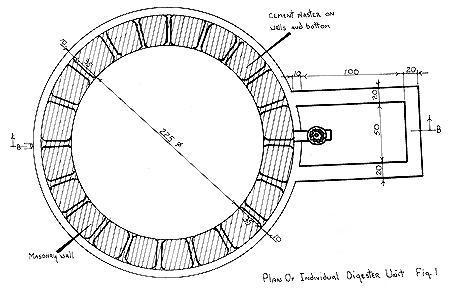 |
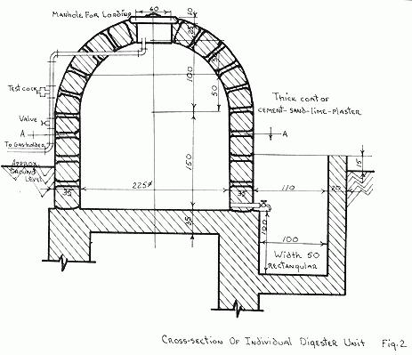 |
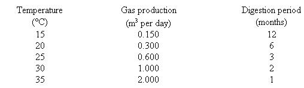 |
|
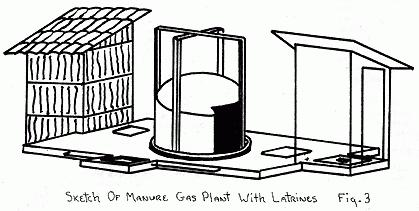 |
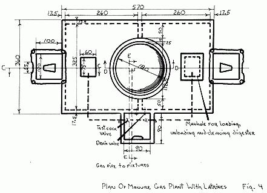 |
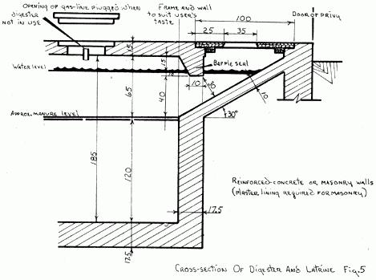 |
|
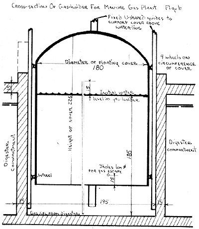 |
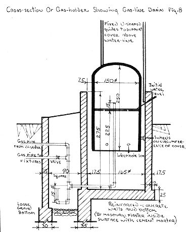 |
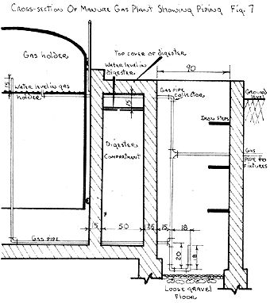 |
|
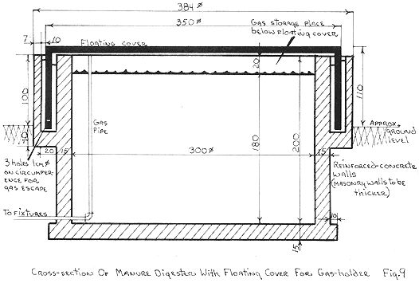 |
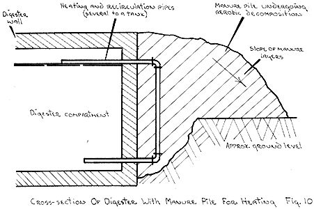 |
|